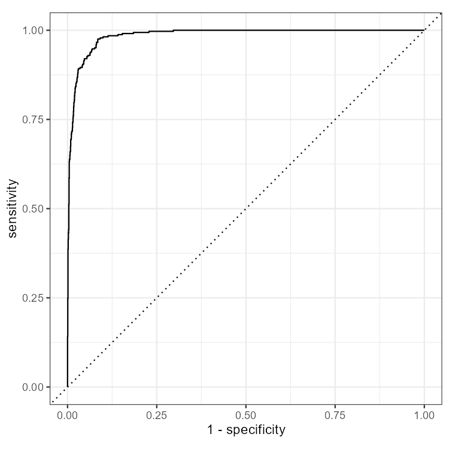
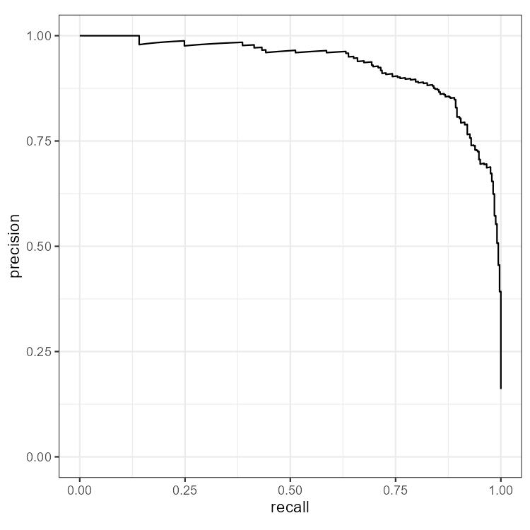
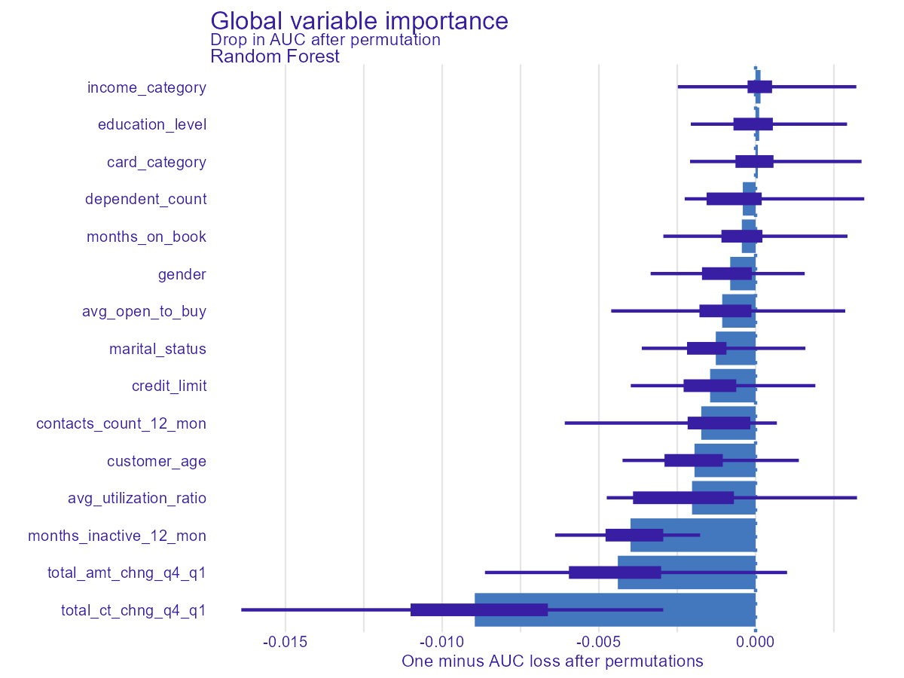
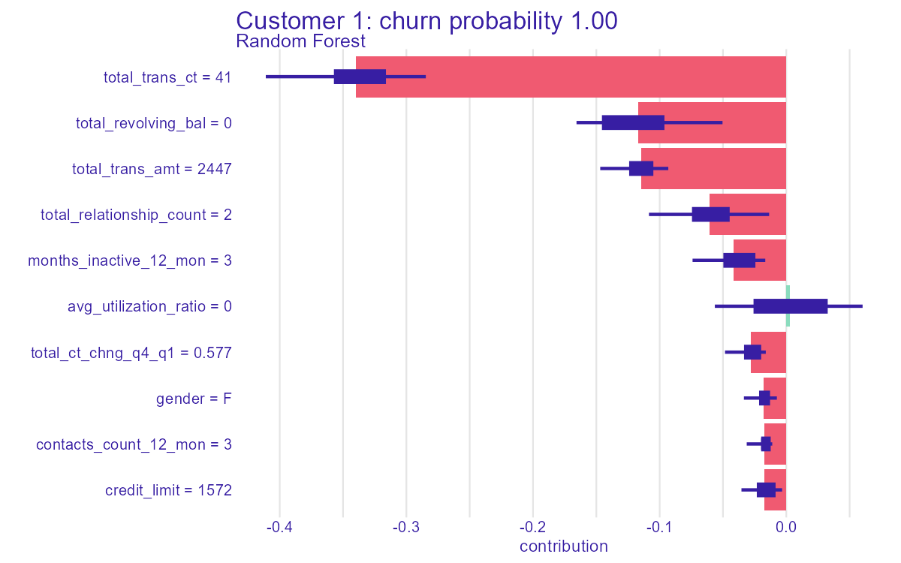
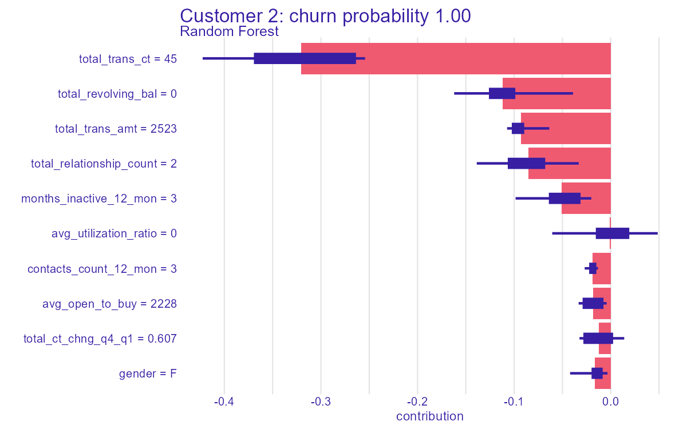
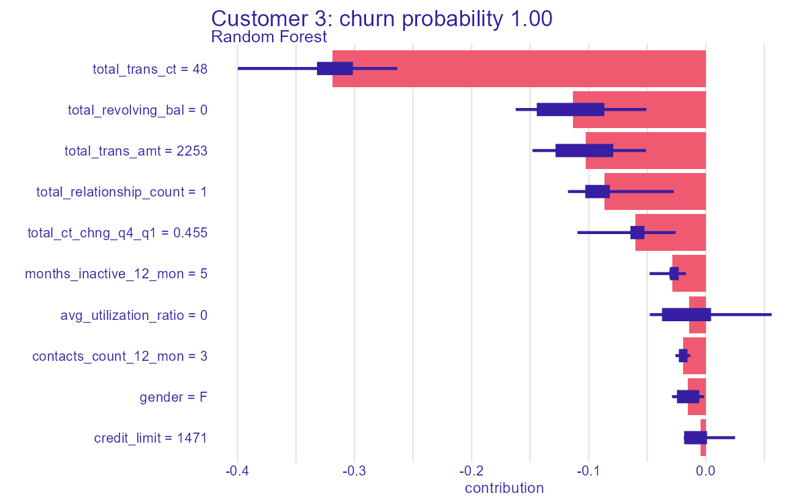

Test-set performance
Measured on 20% of customers the model never saw during training. About of customers churned, so PR-AUC is the harder, more telling score.
Confusion matrix (threshold 0.5)
Model quality curves
ROC curve

Precision-recall curve

What drives churn?

Longer bars mean the model loses more accuracy when that feature is scrambled, so it relies on it more.
Highest-risk customers
See all 25 in a sortable table
Click a column header to sort.
Why those customers? (SHAP)
Bars to the right pushed the churn risk up; bars to the left pushed it down.



Explore it yourself
Move sliders for transactions, inactivity and utilization and watch the predicted churn risk change.
Open the Customer Simulator →